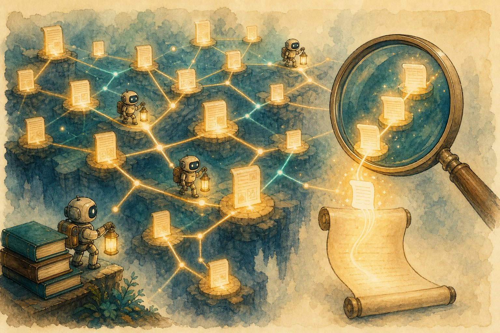

Advanced RAG: agentic, graph & multimodal
Basic RAG retrieves once and hopes. Advanced RAG plans, rewrites, traverses graphs, reads images and tables — and grades itself. This is the chapter that turns Ch 42 demos into production systems.

Figure 48.1 — Retrieval is no longer one lookup; it’s an investigation across chunks, graphs, tables, and images.
1. Agentic RAG: retrieve in a loop
- Query rewriting: expand (“refund” → policy + exceptions), HyDE (draft a hypothetical answer, then retrieve by it), multi-query fan-out.
- Routing: small classifier sends factual → RAG, chitchat → direct, code → docs+repo, tables → Text-to-SQL. Wrong route = wrong tool.
- Corrective RAG: grade retrieved chunks; if thin, rewrite and re-retrieve or fall back to web search — never generate from nothing.
2. GraphRAG & structure-aware retrieval
- When chunks fail: “How do refunds connect to fraud flags across regions?” needs relationships, not passages. Build a knowledge graph (entities + relations) from docs.
- GraphRAG recipe: extract entities/relations → community detection → summarise communities → retrieve subgraphs + summaries → generate. Great for “connect the dots” questions.
- Tables & Text-to-SQL: keep tables whole (Ch 46); for exact numbers, generate SQL over the source DB instead of quoting chunks — no rounding hallucinations.
3. Multimodal RAG & long-context tension
- Multimodal: embed images/charts with CLIP-style models; retrieve figures alongside text; cite page + figure. Parse diagrams into text when precision matters.
- Long context vs RAG: 1M-token windows tempt “stuff everything in.” Reality: retrieval still wins on cost, freshness, and focus — lost-in-the-middle degrades giant prompts. Hybrid: retrieve well, then fill remaining context wisely.
4. Grade it: RAGAS-style evals
| Metric | Question it answers |
|---|---|
| Context precision/recall | Were the right chunks retrieved (and ranked first)? |
| Faithfulness | Is every claim supported by the context? |
| Answer relevance | Did it actually answer what was asked? |
Advanced failure modes
Hop explosion (10 retrievals for a factoid — budget hops) · graph extraction errors compounding · router sending everything to the LLM · evals grading fluency instead of faithfulness · stale graph + fresh chunks disagreeing.
Short notes
Agentic RAG loops plan → retrieve → grade → rewrite (cap hops). Route by query type; GraphRAG for relationship questions; Text-to-SQL for exact numbers; multimodal for figures. RAG still beats stuffing 1M tokens on cost/freshness/focus. Eval context precision/recall + faithfulness + relevance.
Point notes
- Retrieve → grade → retry, budgeted.
- Router picks the right tool.
- Graphs for “connect the dots”.
- SQL for numbers, not quotes.
- Lost-in-the-middle is real.
MCQs
5 questions1. Corrective (agentic) RAG differs from basic RAG by:
2. GraphRAG helps most with questions like:
3. For exact figures from company tables, prefer:
4. “Lost in the middle” refers to:
5. RAGAS context recall measures:
Practice questions
P1. Basic RAG fails on “compare Q3 vs Q4 refund drivers.” Design the advanced pipeline.
Router detects comparison-over-time → plan sub-queries (Q3 drivers, Q4 drivers) → retrieve each + Text-to-SQL for exact figures → grade coverage → synthesise a comparison table with per-cell citations. Eval: faithfulness per claim + number-exactness checks. Log hops; cap at 5.
P2. When would you build a knowledge graph instead of better chunking?
When questions span relationships across documents (ownership chains, incident timelines, policy interactions) that no single chunk contains. Signal: multi-hop eval slice fails while factoid slice passes. Cost: extraction pipeline + graph maintenance + community summaries — only worth it when the question log proves the need.
P3. Your 1M-context model answers worse than small-context RAG on long contracts. Why + fix?
Lost-in-the-middle + distractor dilution: key clauses drown in 900k irrelevant tokens, at 50× the cost. Fix: hybrid — retrieve top clauses precisely, then give the big window only the retrieved evidence + structure (tables intact). Big context is a safety net, not a retrieval strategy.